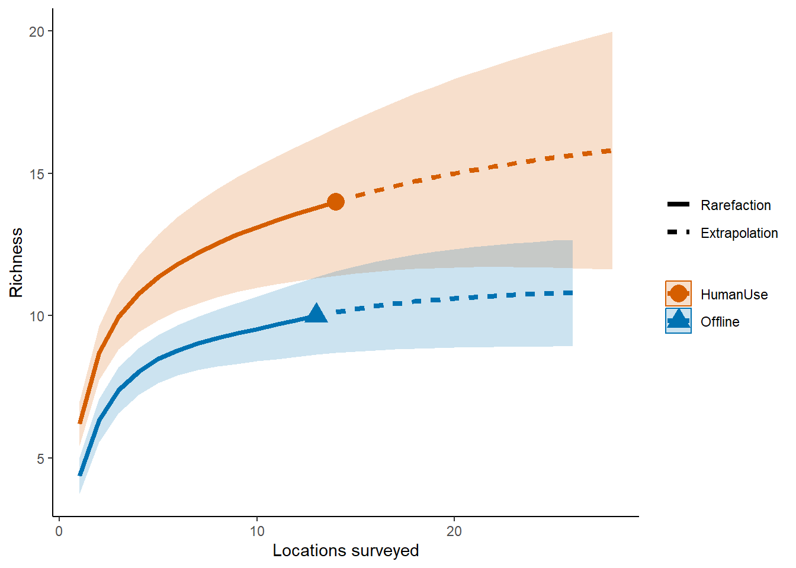
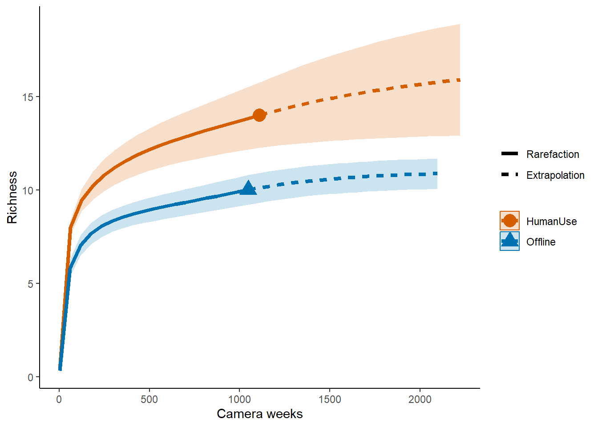
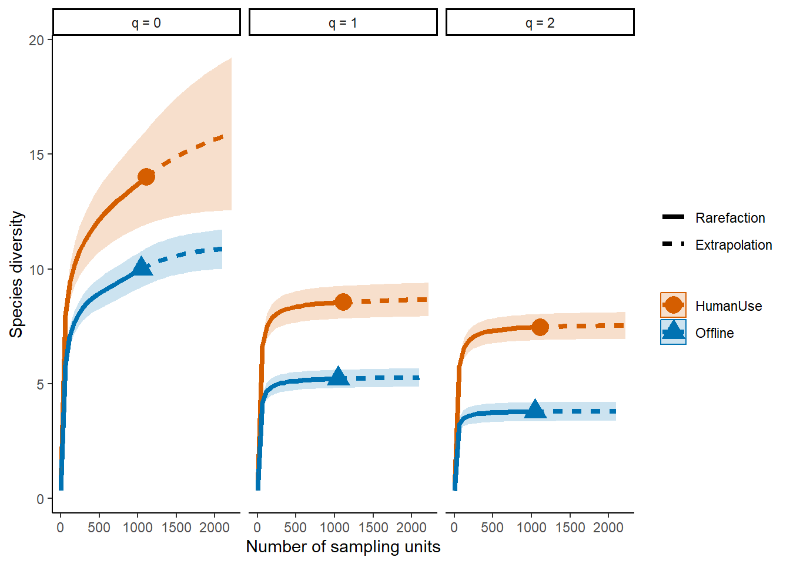
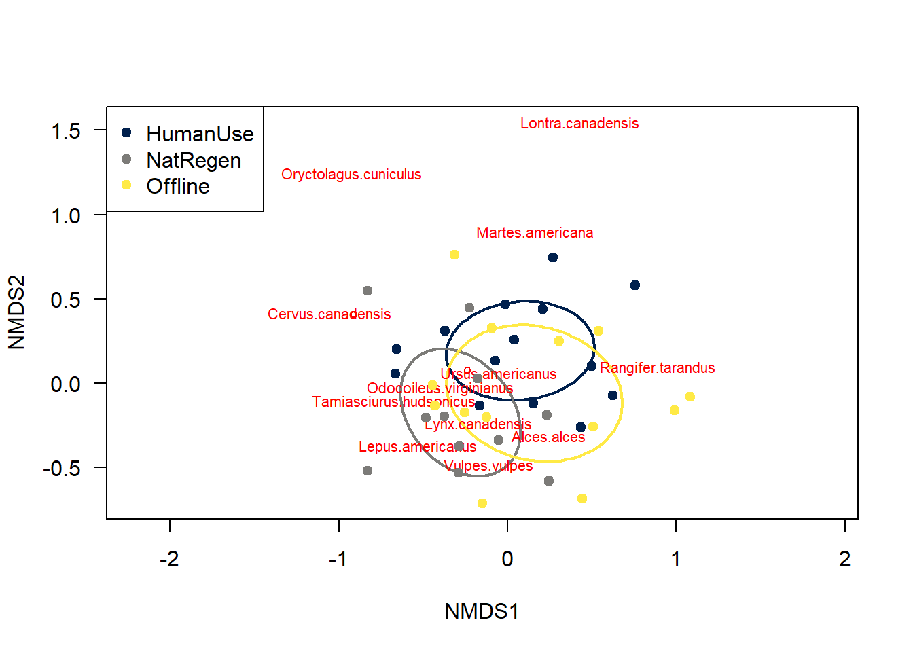

Chapter 9 Community composition
By Christopher Beirne and Laura Stewart
One of the most fundamental questions researchers and practitioners want to answer is how many species are there in my survey area?. Exploring patterns in species richness can also tell us if we have performed ‘enough’ surveying.
Create a new .R script
Call it 04_example_richness.R.
Load the required packages
# Check you have them and load them
list.of.packages <- c("iNEXT", "kableExtra", "tidyr", "ggplot2", "gridExtra", "dplyr", "viridis")
new.packages <- list.of.packages[!(list.of.packages %in% installed.packages()[,"Package"])]
if(length(new.packages)) install.packages(new.packages)
lapply(list.of.packages, require, character.only = TRUE)9.1 Observed richness
The simplest way to quantify species richness is counting the number of species you detect on your camera traps - ‘observed richness’. This is very easy to determine using our species list:
sp_summary <- read.csv("data/processed_data/AlgarRestorationProject_species_list.csv", header=T)
# Use nrow() to count the number of species
nrow(sp_summary)## [1] 14In the case of the example data set, this represents 14 mammal species.
| class | order | family | genus | species | sp | common_name |
|---|---|---|---|---|---|---|
| Mammalia | Artiodactyla | Cervidae | Alces | alces | Alces.alces | moose |
| Mammalia | Artiodactyla | Cervidae | Cervus | canadensis | Cervus.canadensis | elk |
| Mammalia | Artiodactyla | Cervidae | Odocoileus | virginianus | Odocoileus.virginianus | white-tailed deer |
| Mammalia | Artiodactyla | Cervidae | Rangifer | tarandus | Rangifer.tarandus | caribou |
| Mammalia | Carnivora | Canidae | Canis | latrans | Canis.latrans | coyote |
| Mammalia | Carnivora | Canidae | Canis | lupus | Canis.lupus | gray wolf |
| Mammalia | Carnivora | Canidae | Vulpes | vulpes | Vulpes.vulpes | red fox |
| Mammalia | Carnivora | Felidae | Lynx | canadensis | Lynx.canadensis | canada lynx |
| Mammalia | Carnivora | Mustelidae | Lontra | canadensis | Lontra.canadensis | river otter |
| Mammalia | Carnivora | Mustelidae | Martes | americana | Martes.americana | american marten |
| Mammalia | Carnivora | Ursidae | Ursus | americanus | Ursus.americanus | black bear |
| Mammalia | Lagomorpha | Leporidae | Lepus | americanus | Lepus.americanus | snowshoe hare |
| Mammalia | Lagomorpha | Leporidae | Oryctolagus | cuniculus | Oryctolagus.cuniculus | rabbit |
| Mammalia | Rodentia | Sciuridae | Tamiasciurus | hudsonicus | Tamiasciurus.hudsonicus | red squirrel |
It is possible to compare observed richness across different strata of interest, however survey effort must be identical between your comparison strata. This very rarely the case in camera trap studies where cameras break, run out of battery or are deployed for different lengths of time.
The number of species you detect is a function of the amount of effort you spent surveying/the number of individuals detected - the longer a camera is active/the more individuals detected, the more species it will detect. What this means is, unless you saturate a landscape with camera traps, observed richness will underestimate true richness. Consequently, We need ways of comparing species richness which accounts in some way for survey effort.
9.2 Estimated richness
There are two commonly used ways to account for survey effort when estimating species richness using camera traps:
- using the incidence of rare species to ‘correct’ observed richness (
iNext) - using multispecies occupancy models to account for the species present but not observed (occupancy model)
9.2.1 iNext package
The iNext package (INterpolation and EXTrapolation of species richness) - is both easy to use and rapid to compute. It also comes with a wealth of plotting functions - see the iNext Quick Introduction for a great walk through tutorial. Its core functionality is based on:
Chao, Anne, et al. “Rarefaction and extrapolation with Hill numbers: a framework for sampling and estimation in species diversity studies.” Ecological monographs 84.1 (2014): 45-67. Which has, to date, been cited >2000 times!
9.2.1.1 Sampling locations
The iNEXT package gets really interesting when we start to compare multiple different strata. e.g. different treatment types or species groupings.
The code to build a multi-strata comparison is very similar to that of a single strata, except now you separate the observations into their relevant categories/strata.
We will compare the different categories using the feature_type column in the covariate file. We match the ‘placenames’ in our locations dataframe with the corresponding capture data in total_obs using the %in% command.
# Load the packages
library(iNEXT); library(ggplot2); library(gridExtra)
# Use the total observations file
total_obs <- read.csv("data/processed_data/AlgarRestorationProject_30min_independent_total_observations.csv", header=T)
# Format it into incidence data
inc_dat <- total_obs %>%
mutate(across(sp_summary$sp, ~+as.logical(.x))) # Turn species counts into 0's and 1's
# Read in the locations data frame
locs <- read.csv("data/processed_data/AlgarRestorationProject_camera_locations_and_covariates.csv")
# We first want to create a data subset for each of the strata we are interested in:
# The treatment types for each Deployment.Location.ID are in the sta file
# Make an object containing all of the site ID's for the "Offline" cameras
off <- locs$placename[locs$feature_type=="Offline"]
# And "HumanUse" cameras
hum <- locs$placename[locs$feature_type=="HumanUse"]
# Create a new empty list
inc_locations <- list()
# Each "treatment" is a separate element within the list
inc_locations[[1]] <- c(length(off), # First count the number of stations
# Then subset the detections to those stations, sum the columns, and sort the incidents
inc_dat[inc_dat$placename %in% off, sp_summary$sp] %>% colSums() %>% sort(decreasing=T))
inc_locations[[2]] <- c(length(hum), # Count the number of stations
# Then subset the detections to those stations, sum the columns, and sort the incidents
inc_dat[inc_dat$placename %in% hum, sp_summary$sp] %>% colSums() %>% sort(decreasing=T))
# Give them names
names(inc_locations) <- c("Offline", "HumanUse")
# Run the iNEXT code
out.inc <- iNEXT(inc_locations, q=0, datatype="incidence_freq")
# Sample‐size‐based R/E curves
ggiNEXT(out.inc, type=1, color.var="Assemblage") +
labs(y="Richness", x = "Locations surveyed") +
theme_classic() 
9.2.2 Sampling duration example
If we want to explore the species accumulation patterns as a function of the number of survey duration, we can make use of the ...weekly_observations dataframes.
week_obs<- read.csv("data/processed_data/AlgarRestorationProject_30min_independent_weekly_observations.csv", header=T)
# Turn it into binary incidents
inc_dat <- week_obs %>% mutate(across(sp_summary$sp, ~+as.logical(.x)))
# Create a new empty list
inc_time <- list()
# Only sum the data for each relevent strata
inc_time[[1]] <- c(nrow(inc_dat[inc_dat$placename %in% off,]), # Count the number of weeks we have data for in each strata
# Then subset the detections to those stations, sum the columns, and sort the incidents
inc_dat[inc_dat$placename %in% off, sp_summary$sp] %>% colSums() %>% sort(decreasing=T))
inc_time[[2]] <- c(nrow(inc_dat[inc_dat$placename %in% hum,]), # Count the number of stations
# Then subset the detections to those stations, sum the columns, and sort the incidents
inc_dat[inc_dat$placename %in% hum, sp_summary$sp] %>% colSums() %>% sort(decreasing=T))
# Give them names
names(inc_time) <- c("Offline", "HumanUse")
# Run the model
out.inc <- iNEXT(inc_time, q=0, datatype="incidence_freq")
# Sample‐size‐based R/E curves
ggiNEXT(out.inc, type=1, color.var="Assemblage") +
labs(y="Richness", x = "Camera weeks") +
theme_classic() 
Which suggests the same pattern as the site based example.
9.3 Other diversity metrics
9.3.1 Simpson and Shannon
One issue with species richness assessments is that they weight all species equally, thus a community with 12 species all present in equal abundances will give you the same richness value as a high skewed community with one highly abundant species, and 11 very rare ones. Consequently, you might want to estimate species diversity.
Luckily, the iNEXT package is well suited for comparisons of diversity indices through the use of hill numbers - of which the ‘q’ value represents the traditional Shannon (q=1) and Simpson (q=2) diversity indices (species richness: q = 0). Note Increasing values of q reduces the influence of rare species on your estimate of community diversity.
For example, we might want to compare the species diversity across our two focal strata:
# We also introduce the object t -> which reflects the range of values over which you want to predict species richness
out <- iNEXT(inc_time, q=c(0,1,2) ,datatype="incidence_freq" )
ggiNEXT(out, type=1, facet.var="Order.q", color.var="Assemblage") + theme_classic() 
9.3.2 More examples in the literature
Some examples of using iNEXT with camera trap data:
Cusack et al. 2015 Random versus Game Trail-Based Camera Trap Placement Strategy for Monitoring Terrestrial Mammal Communities
Kays et al. 2020 An empirical evaluation of camera trap study design: How many, how long and when?
Semper-Pascual et a. 2018 Mapping extinction debt highlights conservation opportunities for birds and mammals in the South American Chaco
Publishing note
If you publish your work based on the results from the iNEXT package, you should make references to the following methodology paper (Chao et al. 2014) and the application paper (Hsieh, Ma & Chao, 2016):
Chao A, Gotelli NJ, Hsieh TC, Sande EL, Ma KH, Colwell RK, Ellison AM (2014). “Rarefaction and extrapolation with Hill numbers: a framework for sampling and estimation in species diversity studies.” Ecological Monographs, 84, 45–67.
Hsieh TC, Ma KH, Chao A (2022). iNEXT: Interpolation and Extrapolation for Species Diversity. R package version 3.0.0, http://chao.stat.nthu.edu.tw/wordpress/software_download/.
9.4 Community structure
One of the shortfalls in the diversity index approaches is that you can compare two sites with completely different mammal assemblages, but identical diversity estimates! So we would conclude that the two are the same, however,in reality their compositions are totally different. Another way to assess community structure is with ordination methods (e.g non-metric multidimensional scaling or NMDS).
For a fantastic (although now somewhat dated) blog on NMDS methods see: Sample(ecology)’s NMDS tutorial in R.
Luckily a basic NMDS is very easy to run from our ...total_observations dataframe:
#install.packages("vegan")
library(vegan)
# Import your count data
total_obs <- read.csv("data/processed_data/AlgarRestorationProject_30min_independent_total_observations.csv", header=T)
#Import the location and covariate data
locs <- read.csv("data/processed_data/AlgarRestorationProject_camera_locations_and_covariates.csv")
# Add the covariates to your total_obs dataframe
dat <- left_join(total_obs, locs)
# Convert to categorical factors
dat <- dat %>%
mutate_if(is.character,as.factor)
# Subset to just the count columns
counts <- dat[,sp_summary$sp]
# Covert it into a matrix
m_counts <- as.matrix(counts)
# Run the model
set.seed(123) # To make sure we all get the same result
# run metaMDS on the count matrix using the " Bray-Curtis dissimilarity" note others are available
nmds = metaMDS(m_counts, # The count matrix
distance = "bray", # The method of solving
trace=0) # Supress the output - trace=1 is more informative9.4.1 Extracting data for plotting
To make a nice plot of the NMDS data we need to learn how to extract the data from it:
# Make a dataframe out of the x and Y scores
site.scores <- as.data.frame(scores(nmds)$sites)
species.scores <- as.data.frame(scores(nmds)$species)
# Add in the covariate data
#add covariate columns to data frame
site.scores$placename <- dat$placename
site.scores$feature_type <- dat$feature_type
# Assign colors to our feature_types using viridis
# then use the turbo() function to assign each level a color
col.cat <- cividis(length(levels(dat$feature_type)))
# then we apply it to the dataframe
dat$colours <- col.cat[dat$feature_type]
# Plot the result
par(mfrow=c(1,1))
# Make an empty plot type="n
ordiplot(nmds,type="n", las=1,
xlim=c(-1.5,1.2))
# Add an elipse corresponding to each site
ordiellipse(nmds, groups=dat$feature_type,
col=col.cat, lwd=2)
# Add the species loadings
orditorp(nmds,display="species",col="red",air=0.5)
# Add the site loadings
points(site.scores$NMDS1, site.scores$NMDS2, col=dat$colours, pch=19)
# Add a legend
legend("topleft", levels(dat$feature_type), col=col.cat, pch=19 )
The different feature_types to not differ majorly in their species compositions - there is a huge degree of overlap between sites.
The NMDS framework is flexible - we can also add environmental covariates using envfit to explain differences we might find. Checkout a great blog on this by Jackie Zorz for more information!